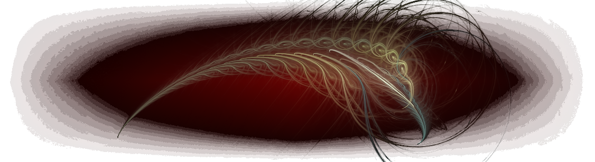

Stories from the Last Long Sunset
Story Template
A page by Author (link to author page)
- Title links:
- Spoiler warning if it gives away the end of another work not obviously connected.
- Links to preceding stories, if any
- Links to succeeding stories, if any
Text of the story.
Illustrations, if any.
Links to next part or succeeding works.